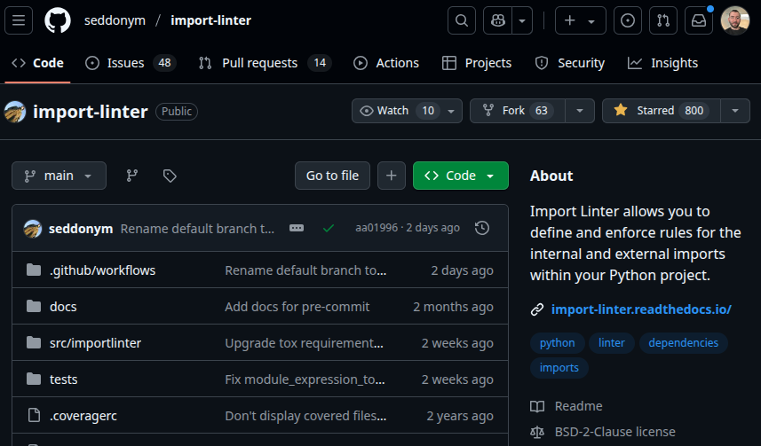

Consistent importing
Jan Bielecki
14-15 November 2025

Jan Bielecki
Senior Full Stack Developer
2015
First Python code (internship)
2019
Using Python professionally
2021
Python modelling in energy industry

Scan for full presentation
consistent_importing.pdf

Ørsted
Global leader in offshore wind
Ørsted vs All
~10.2/~83 GW (~12%)
Offshore vs All
~83 GW/ 19 TW (~0.4%)
Rightsizing
~8000 (2025) ~6000 (2027)
Scan for full presentation
consistent_importing.pdf
I. Why am I talking about this?

Re-exporting definitions through __init__.py
# model/geometry/node.py
class Node: ...
# model/geometry/__init__.py
from .node import Node, function_a
from .edge import Edge, function_b
# model/__init__.py
from .geometry import Node, Edge, function_a, function_b
from .other_module import SomeOtherClass
# gui/__init__.py
from model import Node, Edge, function_a, function_b, SomeOtherClass
✓ Pros:
- Encapsulation/Single entry point
- Short imports
- Acyclic package dependencies
✗ Cons:
- Maintenance overhead
- IDE is confused
- Hard to automate consistency
Consistency reduces decision fatigue

"... the more decisions you make throughout the day, the worse you are at making them."
Python importing without consistency

II. How importing in Python works?

Python interpreter
(base) jan@jan-Inspiron-3543:~/consistent_importing$ python
Python 3.12.8 [GCC 11.2.0] on linux
>>> def hello_world() -> None:
... print("Hello from hello_world function!")
...
>>> hello_world()
Hello from hello_world function!
>>> exit()
(base) jan@jan-Inspiron-3543:~/consistent_importing$ python
Python 3.12.8 [GCC 11.2.0] on linux
>>> hello_world()
Traceback (most recent call last):
File "", line 1, in
NameError: name 'hello_world' is not defined
Python module
# my_module.py
def hello_world() -> None:
print("Hello from hello_world function!")
print("Hello from my_module!")
Python module
# my_module.py
def hello_world() -> None:
print("Hello from hello_world function!")
print("Hello from my_module!")
(base) jan@jan-Inspiron-3543:~/consistent_importing$ python
Python 3.12.8 [GCC 11.2.0] on linux
>>> import my_module
Hello from my_module!
>>> dir(my_module) # properties and methods of the object
[..., '__name__', '__package__', '__spec__', 'hello_world']
>>> my_module.hello_world()
Hello from hello_world function!
Python package
│ main.py
├───gui
│ │ __init__.py
│ └───plots
│ │ __init__.py
│ └───graph
│ __init__.py
└───model
│ __init__.py
└───geometry
node.py
edge.py
__init__.py
sys.path
(.venv) ~\consistent_importing> python
>>> import sys
>>> print(sys.path)
[
'',
'C:\\Desktop\\projects\\consistent_importing',
'C:\\Local\\Programs\\Python\\Python313\\DLLs',
'C:\\Local\\Programs\\Python\\Python313\\Lib',
'C:\\Desktop\\projects\\consistent_importing\\.venv\\Lib\\site-packages',
...
]
sys.path manipulation (execute a module vs execute a script)
(.venv) ~\consistent_importing> python -m src.gui_model.main
[
'~\\consistent_importing',
...
'~\\consistent_importing\\.venv' ]
Success!
(.venv) ~\consistent_importing> python src\gui_model\main.py
[
'~\\consistent_importing\\src\\gui_model',
...
'~\\consistent_importing\\.venv' ]
Success!
# src\gui_model\main.py
from pprint import pprint
pprint(sys.path)
print("Success!")
sys.path manipulation (if the previous approach is not enough)
(.venv) ~\consistent_importing> PYTHONPATH="/example:anything-can-be-here" python
>>> import sys; print(sys.path)
['',
'/example',
'/home/projects/consistent_importing/anything-can-be-here'
'/home/projects/consistent_importing/.venv/lib/python3.12/site-packages',
...]
>>> sys.path.append(True); print(sys.path)
['',
'/example',
'/home/projects/consistent_importing/anything-can-be-here'
'/home/projects/consistent_importing/.venv/lib/python3.12/site-packages',
True
...]
Package vs Namespace Package
────my_package (/some/path)
│ __init__.py
├───plot
│ __init__.py
├───model
│ __init__.py
...
────my_package (/some/another_path)
│ __init__.py
├───plot
│ __init__.py
├───computation
│ __init__.py
...
(.venv) ~\consistent_importing> python
>>> import sys
>>> sys.path
[
'/some/path',
'/some/another_path'
]
>>> import my_package.model
hello from path.my_package.model
>>> import my_package.computation
Traceback (most recent call last):
File "", line 1, in
import my_package.computation
ModuleNotFoundError: No module named 'my_package.computation'
III. What is the best importing strategy?

1. (PEP) Sort imports
Benefit: Consistent order of import statements
2. (PEP) Place imports at the top of a file
Benefit: Being crystal clear about created dependencies
2. (EXCEPTION) Lazy imports of heavy modules
python -X importtime -c 'import torch' 2> torch-import.prof
uvx tuna torch-import.prof
# src/evaluation.py
def evaluate_model(model: Model) -> None:
import torch # noqa: PLC0415
...
# src/__main__.py
from src.evaluation import evaluate_model
def main() -> None:
if do_evaluate:
evaluate_model(model)
...
Benefit: Reduction of startup time at some conditions
2. (EXCEPTION) Use TYPE_CHECKING for heavy types
# src/model.py
from typing import TYPE_CHECKING
# lazy import to reduce startup time
if TYPE_CHECKING:
import torch
class Model:
def add_module(self, module: "torch.Module") -> None:
print(f"Adding module: {module}")
...
Benefit: Reduction of startup time at some conditions
3. (PEP) Absolute imports
Benefit: More informative and less ambiguous
4. Avoid using Namespace Packages
────my_package (/some/path)
│ __init__.py
├───plot
│ __init__.py
├───model
│ __init__.py
...
────my_package (/some/another_path)
│ __init__.py
├───plot
│ __init__.py
├───computation
│ __init__.py
...
(.venv) ~\consistent_importing> python
>>> import sys
>>> sys.path
[
'/some/path',
'/some/another_path'
]
>>> import my_package.model
hello from path.my_package.model
>>> import my_package.computation
Traceback (most recent call last):
File "", line 1, in
import my_package.computation
ModuleNotFoundError: No module named 'my_package.computation'
Benefit: Avoid uncertain behavior of namespace packages
5. (PEP) Avoid using wildcard imports
# base_implementation.py
def fast_add(a: float, b: float) -> float:
return a + b
def fast_multiply(a: float, b: float) -> float:
return a * b
# cython_accelerated_implementation.py (optional module)
def fast_add(a: float, b: float) -> float: ...
# public_api.py
from base_implementation import * # noqa: F403
try: # (cython_accelerated_implementation.py could be missing)
from cython_accelerated_implementation import * # noqa: F403
except ImportError:
pass
# main.py
from public_api import fast_add
from public_api import fast_multiply
Benefit: Avoid ambiguity and namespace pollution
6. (PEP) Imports should be grouped
# standard library imports
import filecmp
import shutil
from pathlib import Path
# related third party imports
import pandas as pd
import pytest
import numpy as np
# local application/library specific imports
from common.constants import current_version
from common.constants import default_model_type
from dashboard.model.model import Model
from dashboard.model.model import ModelType
from source.db import DB
from source.connector.adapter import TimeSeriesAdapter
Benefit: Immediate visual separation of different types of dependencies
7. Import one definition per line
import filecmp
import shutil
from pathlib import Path
import pandas as pd
import pytest
import numpy as np
from common.constants import current_version
from common.constants import default_model_type
from dashboard.model.model import Model
from dashboard.model.model import ModelType
from source.db import DB
from source.connector.adapter import TimeSeries
Benefit: Reduction of version control conflicts
8. Direct imports from the defining module
# pkg_a/module_a.py
class ClassA:
pass
# pkg_b/module_b.py
from pkg_a.module_a import ClassA
class ClassB:
def compare(self, other: ClassA) -> bool:
return str(self) == str(other)
# main.py
from pkg_b.module_b import ClassA
from pkg_b.module_b import ClassB
class_b_instance = ClassB()
class_a_instance = ClassA()
print(class_a_instance)
print(class_b_instance)
Benefit: Being explicit about dependencies ("Explicit is better than implicit")
8. (EXCEPTION) Encapsulation (or "convenience imports")
│ main.py
├── os_ops
│ ├── _windows
│ │ │ __init__.py
│ │ │ path.py
│ │ │ ...
│ │
│ ├── _linux
│ │ │ __init__.py
│ │ │ path.py
│ │ │ ...
│ └── __init__.py
└─ __init__.py
# main.py
from os_ops import copy_file
copy_file(
"source.txt",
"destination.txt"
)
# os_ops/__init__.py
import os
if os.name == 'nt':
from ._windows.path import copy_file
elif os.name == 'posix':
from ._linux.path import copy_file
else:
raise OSError(f"Unsupported OS: {os.name}")
Benefits: Proxy advantages, short imports
9. Follow Acyclic Dependencies Principle (ADP)
Benefits: Loose coupling
IV. Following Acyclic Dependencies Principle (ADP)

Why to care about clean modular structure?
│ main.py
├───gui
│ │ __init__.py
│ └───widget
│ │ __init__.py
│ └───icon
│ __init__.py
...
└───base_model
│ __init__.py
└───geometry
node.py
edge.py
__init__.py
...
# running tests inside a specific package
python -m pytest base_model/geometry
# linting a specific package
ruff check gui/widget/icon
Benefit: Individual package as a separated component ("divide and conquer")
Why to care about clean modular structure?
Benefit: Make the code easier to understand, increased maintainability
Why to care about clean modular structure?
Benefit: Easier to change one component without affecting another because of loose coupling
Python circular imports. A bug or a feature?
File "gui/__init__.py", line 1, in
from model import Node
File "model/__init__.py", line 1, in
from .geometry import Node
File "model/geometry/__init__.py", line 3, in
from gui import Graph
^^^^^^^^^^^^^^^^^^^^^
ImportError: cannot import name 'Graph' from partially initialized module 'gui'
(most likely due to a circular import) (/gui/__init__.py)
Re-exporting definitions through __init__.py
# model/geometry/node.py
class Node: ...
# model/geometry/__init__.py
from .node import Node, function_a
from .edge import Edge, function_b
# model/__init__.py
from .geometry import Node, Edge, function_a, function_b
from .other_module import SomeOtherClass
# gui/__init__.py
from model import Node, Edge, function_a, function_b, SomeOtherClass
Circular dependencies between packages
Circular dependencies between packages
Circular dependencies between packages
Circular dependencies between packages
Circular dependencies between packages
Circular dependencies between packages
Circular dependencies between packages
# model/geometry/node.py
class Node: ...
# model/geometry/__init__.py
from .node import Node
# model/__init__.py
from .geometry import Node
# gui/__init__.py
from model import Node
# model/geometry/__init__.py
from gui import Graph
File "gui/__init__.py", line 1, in
from model import Node
File "model/__init__.py", line 1, in
from .geometry import Node
File "model/geometry/__init__.py", line 3, in
from gui import Graph
^^^^^^^^^^^^^^^^^^^^^
ImportError: cannot import name 'Graph' from partially initialized module 'gui'
(most likely due to a circular import) (/gui/__init__.py) V. How can we enforce the selected strategy in CI?

Ruff
from functools import partial
import sys
import pandas as pd
from pydantic import BaseModel
from pydantic import Field
from my_another_package.graph import Graph
from my_another_package.graph import Node
from my_package.model import model
# ruff.toml
[lint]
select = [
"I", # isort (1)
"PLC0415", # import-outside-top-level (2)
"TID252", # relative-imports (3)
"INP001", # implicit-namespace-package (4)
"F403", # undefined-local-with-import-star-usage (5)
]
[lint.isort]
known-first-party = ["my_another_package"] # (6)
force-single-line = true # (7)
only-imports-from-defining-module = true # (WIP) (8)
Import Linter
"Import Linter allows you to define and enforce rules for the internal and external imports within your Python project."
Import Linter - Forbidden modules
[importlinter]
root_package = mypackage
[importlinter:contract:1]
name = GUI cannot be imported from other packages
type = forbidden
source_modules =
mypackage.model
mypackage.db
forbidden_modules =
mypackage.gui
(mypackage) jan@jan-Inspiron-3543:~$ lint-imports
=============
Import Linter
=============
Analyzed 134 files, 699 dependencies.
-------------------------------------
GUI cannot be imported from other packages KEPT
Contracts: 1 kept, 0 broken.
Import Linter - Layers
[importlinter]
root_package = my_package
[importlinter:contract:1]
name = Hierarchical architecture
type = layers
layers =
mypackage.gui
mypackage.model
mypackage.db
(my_package) jan@jan-Inspiron-3543:~$ lint-imports
=============
Import Linter
=============
Analyzed 134 files, 699 dependencies.
-------------------------------------
Hierarchical architecture KEPT
Contracts: 1 kept, 0 broken.
Import Linter - Acyclic dependencies
pip install import-linter@git+https://github.com/K4liber/import-linter@issue/221_tree_contract
# .importlinter
[importlinter]
root_package = django
[importlinter:contract:1]
name=Acyclic dependecies
type=acyclic
packages=
django
consider_package_dependencies = true
group_by_family = true
lint-imports --verbose
Import Linter - Acyclic dependencies
Number of dependency cycles found for a contract 'Acyclic dependecies': 252
Package level cycles: 148
Module level cycles: 104
...
Package django contains a (package) dependency cycle:
1. django.conf depends on django.views:
- django.conf.urls -> django.views.defaults (l. 2)
2. django.views depends on django.template:
- django.views.defaults -> django.template (l. 9)
3. django.template depends on django.urls:
- django.template.defaulttags -> django.urls (l. 468)
4. django.urls depends on django.conf:
- django.urls.resolvers -> django.conf.urls (l. 744)
...
Import Linter - Cycles solver
Show cycle breakers using "minimum weighted feedback arc set" algorithm
Import Linter - Acyclic siblings
# .importlinter
[importlinter]
root_package = django
[importlinter:contract:1]
name = Acyclic siblings
type = acyclic_siblings
ancestors =
django.db
depth = 0
skip_descendants =
django.db.**.base
ignore_imports =
django.db.backends.dummy.features ->
django.db.backends.base.features
Import Linter - Acyclic siblings
Acyclic siblings BROKEN
Contracts: 0 kept, 1 broken.
----------------
Broken contracts
----------------
Acyclic siblings
----------------
No cycles are allowed in django.db.
It could be made acyclic by removing 2 dependencies:
- .models -> .backends (4 imports)
- .utils -> .backends (1 import)
impulse drawgraph django.db --show-import-totals --show-cycle-breakers
Summary
- Importing in Python can be done in many different ways
- Choosing one, consistent way, will reduce decision fatigue
- Clean modular structure of your Python code matters
- Following Acyclic Dependencies Principle (ADP) leads to a better software design
- Using tools like Ruff and Import Linter facilitate checks automation
Bibliography
- Ørsted find farm photo, Lester Hsu, https://orsted.com/en/media/news/2022/04/20220421515811
- Why do successful people wear the same outfits every day?, Oneindia News, https://www.todaywellspent.com/blogs/articles/why-do-successful-people-wear-the-same-outfits-every-day
- PEP-0008 (Imports), Python Software Foundation, https://peps.python.org/pep-0008/#imports
- Convenience Imports, Kraken, https://github.com/octoenergy/public-conventions/blob/main/conventions/python.md#convenience-imports
- Import Linter, David Seddon, et al. https://github.com/seddonym/import-linter
- Impulse, David Seddon https://github.com/seddonym/impulse